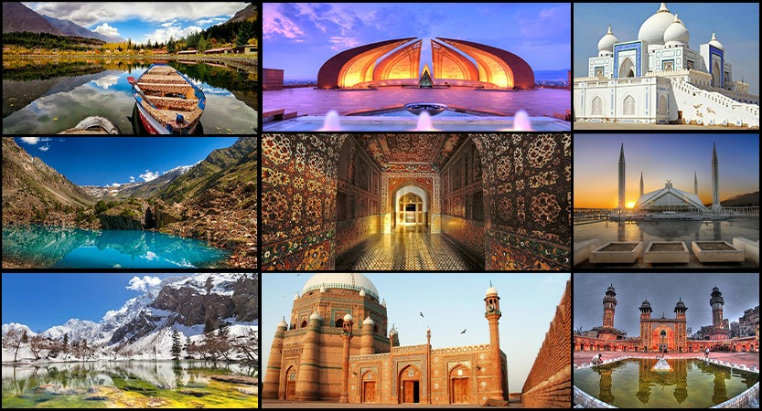

Pakistan, our beautiful and peaceful homeland is located in South Asia. From the west, it shares borders with Iran, From the northeast, it is bordered by China.
In its north there is Afghanistan and India is in its East while there to the South, there is the Arabian Sea.
There are immense historical and cultural bindings between Pakistan and its neighboring countries i.e. Afghanistan, India, and Iran. There are very friendly relationships between Pakistan and China and China has great credit in many developmental programs that are currently operating in Pakistan.
Islamabad is the capital city of Pakistan. Karachi is the largest city in Pakistan that is situated on the Arabian Sea coast in the south of Pakistan.
In this article, we would discuss the province of Pakistan and would also put a spotlight on their culture and traditions. Other than the provinces of Pakistan, you would also come to know about the territories of Pakistan.
There are a total of four provinces in the beautiful land of Pakistan.
With respect to population, Punjab is the largest province and second largest in terms of area. While Balochistan province comes first in terms of area and is the smallest province by population.
On the advice of the Prime Minister, a non-executive Governor is appointed as the head of the province by the President.
Pakistan is a country full of ethnic diversity. You will find different cast, norms, cultures, and traditions being celebrated in this country. It comprises four provinces, and each province has its lifestyle.
Different languages are spoken in different provinces, e.g. People of Punjab speak Punjabi, people of Sindh speak Sindhi, people of Baluchistan speak Balochi, Pashto, Urdu, and Brahui, people of Khyber-Pakhtunkhwa speaks Pashto, and English.
Let's find out more about the cultures and the rest of the highlights of provinces of Pakistan.